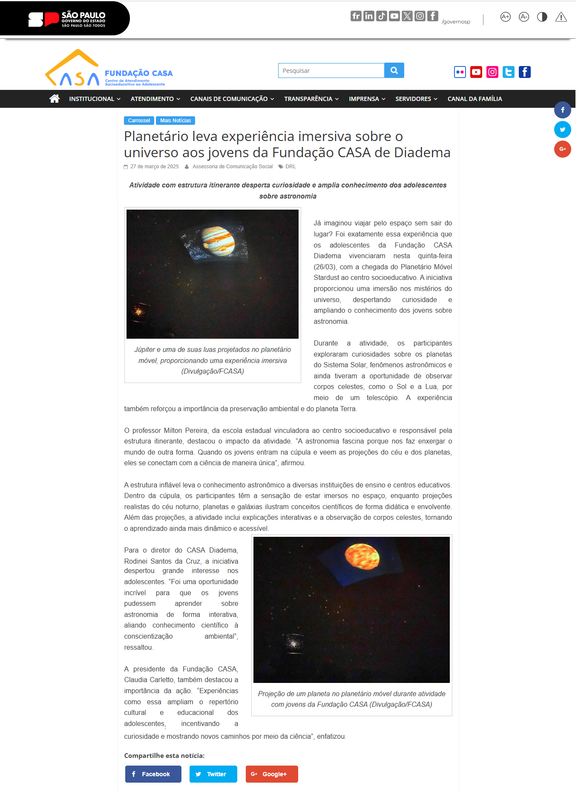
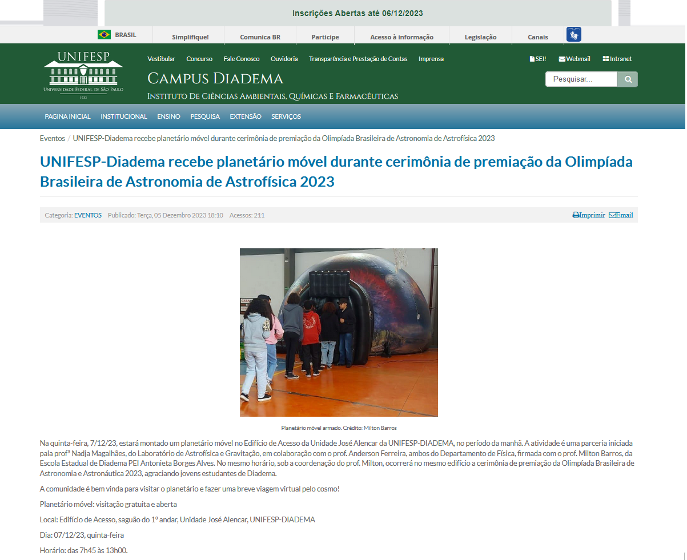
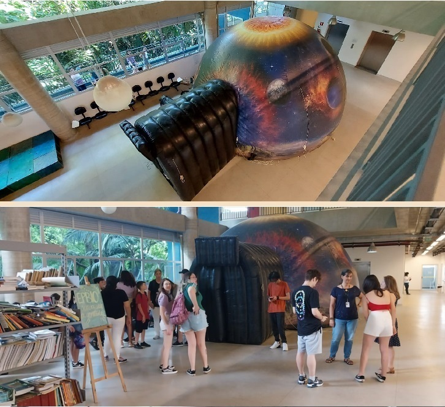
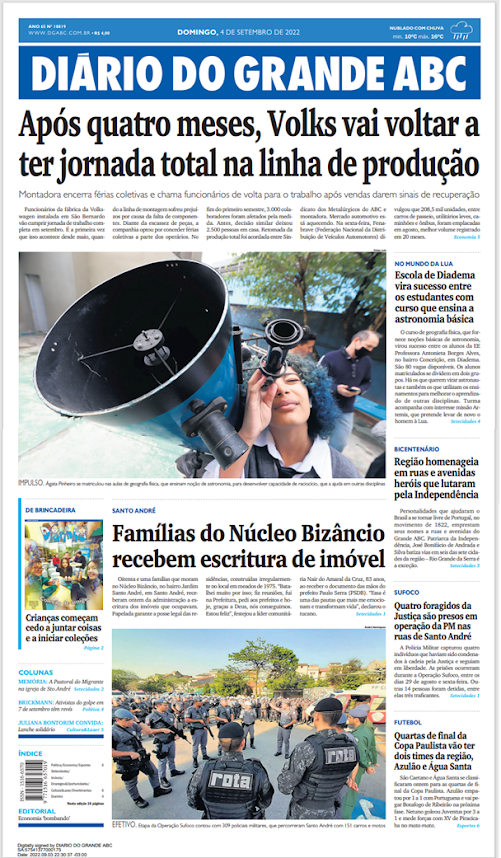
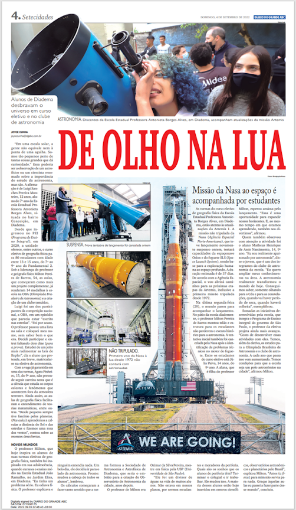
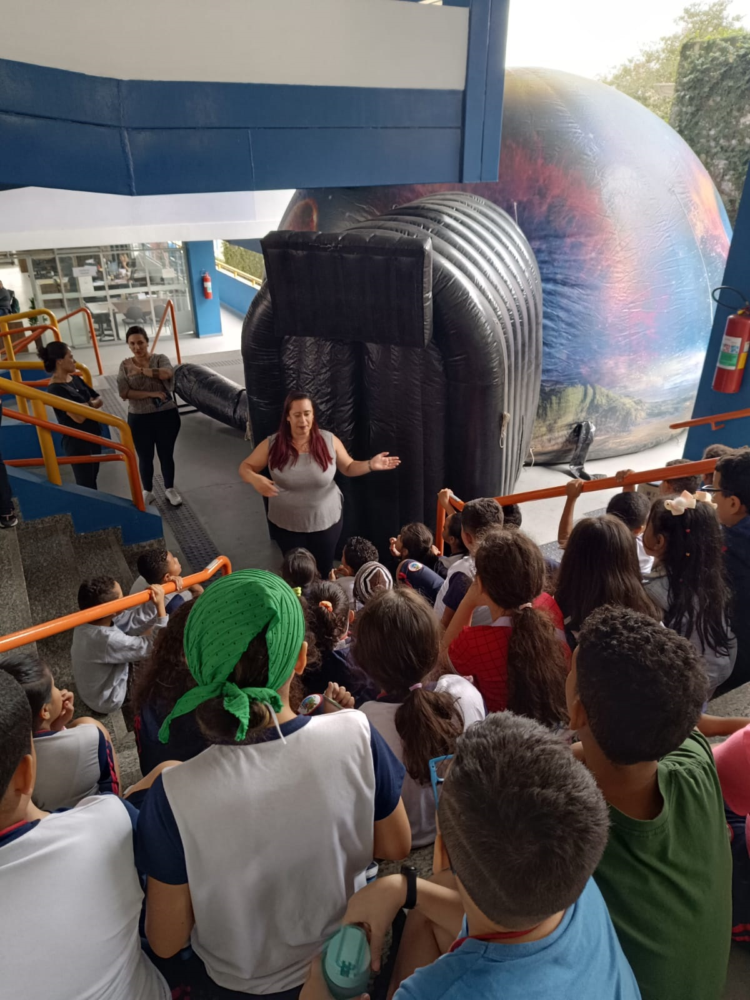
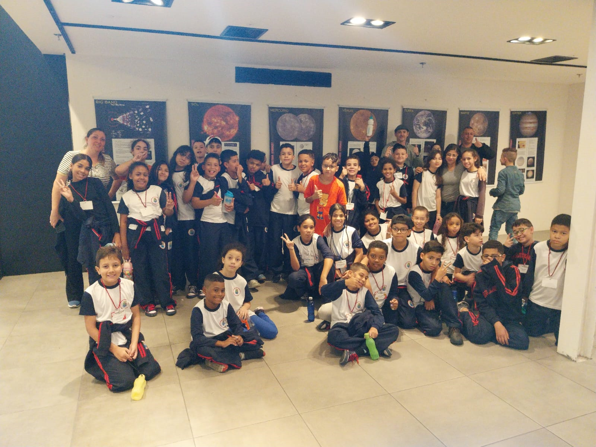
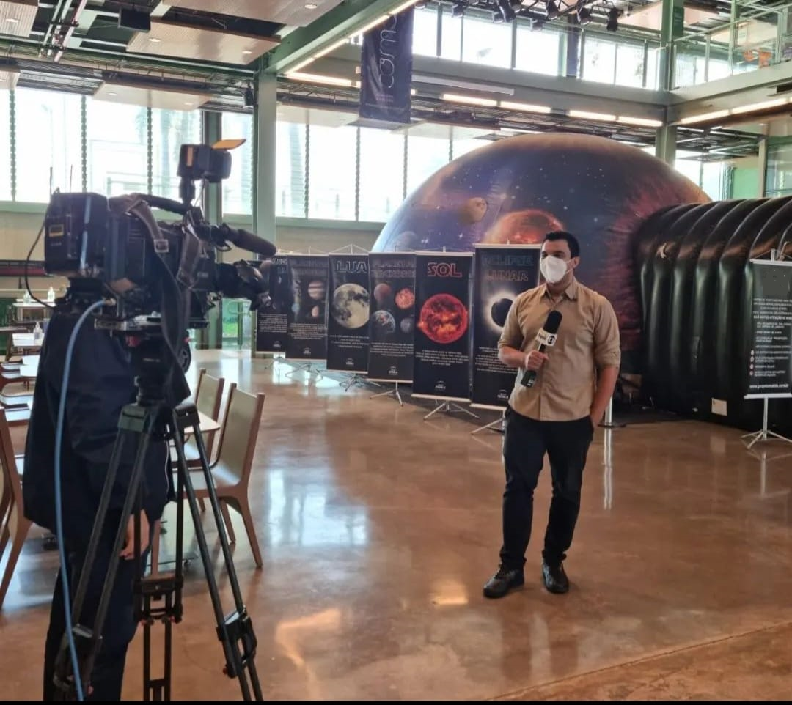
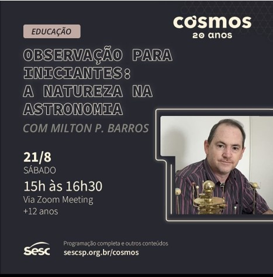

Histórico
Histórico
O Planetário Inflável integra a programação do Clube de Astronomia Artemis- ABA desse 2023 (Em parceria com a STARDUST)
Trata-se de uma cúpula inflável na qual são projetadas imagens do céu noturno visto da Terra, proporcionando aos espectadores uma experiência imersiva que possibilita a observação e compreensão dos fenômenos celestes. Um dos grandes diferenciais dessa experiência é a oportunidade de visualizar o céu livre dos efeitos da poluição atmosférica e da poluição luminosa, fatores que frequentemente dificultam a observação da imensa quantidade de estrelas presentes no firmamento.
Com o suporte de recursos audiovisuais, são abordados temas como as constelações do zodíaco, as fases da Lua, o ciclo dos dias e das noites, bem como a trajetória do Sol. O planetário permite ainda a simulação do céu em qualquer dia do ano, possibilitando a visualização das estrelas, constelações e planetas visíveis, além da análise das variações que ocorrem ao longo das estações.
Adicionalmente, os visitantes podem explorar o céu noturno de diferentes regiões do planeta, compreendendo como as variações de latitude influenciam a observação dos astros. A experiência inclui também um percurso virtual do Equador ao Polo Sul, permitindo visualizar as transformações no céu ao longo dessa jornada. Além disso, são apresentados os mitos e narrativas que originaram a nomenclatura de diversas constelações.
A exibição possibilita a visualização de imagens detalhadas do Sistema Solar, sondas espaciais e estrelas, enriquecendo a experiência do público. Todas as apresentações são conduzidas por monitores especializados, garantindo uma abordagem didática e interativa.
O Planetário Portátil (STARDUST) também possui caráter itinerante, tendo atendido centenas de pessoas, entre estudantes, professores e público em geral.
Dentre os principais eventos e instituições que já receberam o planetário, destacam-se:
- PLANETÁRIO NA UNIFESP - CAMPUS DIADEMA. CERIMÔNIA DE ENTREGA DE MEDALHAS DA OBA.
- PLANETÁRIO NA ESCOLA PEI ANTONIETA BORGES ALVES - DIADEMA-SP- Culminância das eletivas.
- PLANETÁRIO NA SECRETARIA MUNICIPAL DE EDUCAÇÃO DE DIADEMA
- PLANETÁRIO NO SESC - BIRIGUI – SP
- PLANETÁRIO NO SHOPPING PRAÇA DA MOÇA – SEMANA DA ASTRONOMIA DE DIADEMA.
- FUNDAÇÃO CENTRO DE ATENDIMENTO SOCIOEDUCATIVO AO ADOLESCENTE- CASA.
- Entre diversas outras iniciativas de divulgação científica e educação.
FUNDAÇÃO CENTRO DE ATENDIMENTO SOCIOEDUCATIVO AO ADOLESCENTE- CASA.

UNIFESP - Rede Articulações - Campus Diadema.



Secretaria de Educação do Município de Diadema.

Shopping Praça
da Moça.

SESC Birigui.
